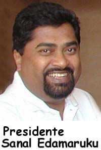

Cuánto debemos esperar
He recibido unas cuatro o cinco requisitorias cada mes sobre los comentarios de Gary Schwartz sobre mi trabajo, y cómo parezco incapaz de contestar a sus ataques. El cuarto aniversario de mi acercamiento directo a Schwartz y su pseudociencia, en el que me ofrecí a encontrarme con él cara a cara, acaba de pasar, y les presento aquí la carta que envié a la Universidad de Arizona. Creo que les parecerá que presenté un enfoque justo y razonado para una investigación, y les pido que recuerden que Gary Schwartz ya había acordado, aquí en persona en la JREF, hace cinco años, que enviaría sus datos sin procesar a la JREF para su evaluación; pero luego de ello, no supimos nada más de él. Aquí está la carta:
Richard Imwalle, PresidenteFundación de la Universidad de ArizonaCasilla de correo 210109, Tucson, Arizona 85721-010927 de marzo de 2001
Estimado presidente Imwalle:
Le escribo desde la oficina de la Fundación Educativa James Randi (JREF) de Fort Lauderdale, Florida. Soy James Randi, fundador y presidente.
Como seguramente sabe, recientemente se ha dado atención internacional a la investigación en “sistemas de energía humana” llevada a cabo en la Universidad de Arizona por el doctor Gary E. R. Schwartz. La interpretación general de esta investigación, aunque comprensiblemente exagerada por los medios, es que puede haberse producido evidencia que muestra que algunas personas tienen la capacidad de comunicarse con los espíritus de personas fallecidas. Este es un tema que le interesa en gran medida a esta Fundación.
Para interiorizarse sobre las preocupaciones e intereses de la JREF, puede visitar nuestro sitio web en www.randi.org.
Esta Fundación ofrece un desafío de un millón de dólares a aquéllos que creen que pueden presentar evidencia de asuntos paranormales, ocultos o sobrenaturales. El doctor Schwartz ha expresado no tener interés alguno en obtener este premio para la Universidad, por la terminología utilizada. Escribe:
El premio de Randi es para la investigación “paranormal”. No usamos el término “paranormal” o “sobrenatural”. Usamos el término “sistemas de energía humanos” que se basa en física contemporánea y ciencia de sistemas […]. Randi siempre podría afirmar que nuestros hallazgos no son “paranormales” usando esas teorías, y por lo tanto no pagar el premio.
El doctor Schwartz también nos ha dicho que:
… no nos presentamos para ganar premios. Realizamos investigaciones. Es un hecho que nos presentamos para obtener subsidios […]. La universidad de Arizona aceptará donaciones para cosas creíbles otorgadas por cualquiera, incluyéndonos.
Presidente Imwalle, le aseguro que la JREF nunca decidiría retener el premio refugiándose en la terminología, como sugiere el doctor Schwartz. Y entendemos que la palabra “premio” puede ser bastante insatisfactoria para describir una meta académica, aunque nos viene a la mente la palabra “Nobel”. Sin embargo, el doctor Schwartz ha trazado los límites con claridad, y nos sentimos obligados a intentar avenirnos a sus necesidades en esta cuestión.
Para superar estos problemas, esta Fundación acepta incluir “sistemas de energía humanos” como un término aceptable para su inclusión entre aquellos a los que pagaremos nuestro premio, sujetos por supuesto a una descripción más detallada de lo que este término puede implicar en cualquier protocolo especificado. Además, podremos redenominar nuestro “premio” como “subsidio”, para que pueda considerárselo con una actitud más favorable.
El importe en cuestión es de un millón de dólares estadounidenses (US$ 1.000.000) actualmente a nuestra disposición como bonos negociables. Estamos dispuestos a ofrecer este subsidio a la Universidad de Arizona, para usarse con cualquier propósito que los Directores de la Universidad puedan designar, sin restricciones. Este ofrecimiento está sujeto a las siguientes condiciones:
Los datos ya obtenidos por el grupo Schwartz (transcripciones, videos, grabaciones de audio, notas, protocolos, etc.) deben ser presentados ante un Panel Calificado Independiente (ver más adelante) para su evaluación.
El doctor Schwartz y/o sus compañeros de trabajo deberán prepararse para responder a requisitorias específicas realizadas por el Panel Calificado Independiente luego del examen por parte de este último de los datos presentados ante ellos.
En caso de que los datos y las respuestas a cualquier pregunta sean satisfactorias para el Panel Calificado Independiente, la JREF aceptará que el “examen preliminar”, según se lo denomina en nuestra oferta oficial (vea www.randi.org/research/challenge.html) se ha cumplido. El siguiente paso sería refinar un protocolo que sea satisfactorio para el Panel Calificado Independiente y para las necesidades del doctor Schwartz, para proceder con la verificación formal de los fenómenos de “sistemas de energía humanos”.
Para el “Panel Calificado Independiente”, sugerimos que debería incluir a estas personas:
Doctor Stanley Krippner, doctor en psicología de la Universidad Northwestern. Parapsicólogo, autor, director del Centro para los Estudios de la Conciencia del Instituto Saybrook de San Francisco. Miembro de la Sociedad Estadounidense de la Investigación Psíquica. Presidente de la Asociación Parapsicológica en 1983.
Doctor Marvin Minsky, doctor en matemática de la universidad de Princeton. Matemático, educador, autor. Miembro de IEEE, Academia Estadounidense de Ciencias, Academia de Ciencias de Nueva York, Academia Nacional [Estadounidense] de Ciencia. Departamento de Ingeniería Eléctrica y Ciencias de la Computación, MIT
Doctor Michael Shermer, doctor en Historia de la Ciencia de la Escuela Claremont de Graduados. Editor y publicista del Skeptical Magazine, columnista para la revista Scientific American, autor de varios libros, presentador de la Serie de Conferencias Científicas de Caltech.
Este es nuestro “Panel Calificado” sugerido de científicos doctorados quienes ya han acordado con esta Fundación examinar los datos obtenidos por el doctor Schwartz. Todos ellos son especialistas informados y dispuestos, quienes creo serán aceptables para el doctor Schwartz. Yo, James Randi, no participaré en ninguna de las evaluaciones realizadas por el Panel.
Doctor Imwalle, esta es una oferta legítima realizada por la Fundación Educativa James Randi y su Junta de Directores. Nos interesa verdaderamente saber más sobre los datos de investigación generados por el doctor E. R. Schwartz, y nos parece que el público y los medios deben ser correctamente informados de la calidad y amplitud del trabajo que se realiza en la Universidad, en lugar de hacer suposiciones mal informadas. Y creemos que el doctor Schwartz estará de acuerdo con nosotros en que debemos seguir a los datos a la conclusión a la que conduzcan.
Espero su respuesta con gran interés. Gracias por considerar esta sugerencia.

Esto obviamente produjo gran cantidad de conferencias en el campus de la Universidad. Cinco semanas más tarde, recibí esta cortés respuesta del Presidente Imwalle.
Estimado señor Randi:
La presente responde a su carta dirigida a mí fechada el 27 de marzo de 2001, en relación con la investigación que lleva a cabo en la Universidad de Arizona el doctor Gary Schwartz. Desde la recepción de la carta he tenido varias conversaciones con la Jefa del Departamento de Psicología, así como con el doctor Schwartz sobre su propuesta. Nuestra conclusión es que la Universidad no está preparada en este momento para ocuparse del tema.
Al revisar la oferta de la Fundación Educativa James Randi con mis colegas en el campus, fue evidente que deben discutirse y resolverse muchos temas antes de que pueda dársele más consideración al asunto. Sugiero que hable usted directamente con el doctor Schwartz en caso de que desee que se le preste atención adicional al tema.
Gracias por su interés en la Universidad de Arizona.
Cc: Doctor Gary E. R. Schwartz Doctora Lynn Nadel
(La doctora Lynn Nadel es la jefa del Departamento de Psicología, científica cognitiva de investigación, y vicedirectora del Centro para el Estudio de los Sistemas Complejos, todo ello en la Universidad de Arizona.)
¿Cuáles suponen que serán los “muchos temas” que “deben discutirse y resolverse”? Y en cuanto a no estar “preparada en este momento para ocuparse del tema”, ¿cuántos años más deberemos esperar hasta que aguardamos que la Universidad de Arizona llegue a una condición “preparada”? Seguramente su banco está preparado para aceptar el premio del millón de dólares…
Esto es típico de los círculos académicos. Nunca ponen en peligro a ningún profesor titular respondiendo preguntas incómodas. Le permiten convertirse en un mimado de los medios, que hace afirmaciones extremas y anuncia descubrimientos escandalosos en nombre de la universidad, pero simplemente esperan que todo pase. Incluso con un subsidio o premio de un millón de dólares (que la Universidad ciertamente aceptaría con gusto), poner a Schwartz en una posición donde tendría que probar sus afirmaciones en lugar de escribir simplemente libros populares sobre ellas es algo que “no se hace”. La Torre de Marfil, ¿no lo sabían?
Schwartz, desde lo alto de su residencia permanente en la Torre de Marfil, respondió a un comentario que hice acerca de su reluctancia. Me referí a él como
… un académico que abandonó la razón para aceptar todas y cada una de las cosas que le presentan los farsantes desde John Edwards hasta el gitano de la calle.
Replicó:
Me rehusé [a aceptar el desafío] por la misma razón que todos los científicos serios de Estados Unidos y Europa se rehusaron. El proceso de este premio carece de credibilidad e integridad científicas. Este fulano no es un científico: es un mago mediocre que ama la mirada del público.
No puedo discutir la opinión de Schwartz sobre mi trabajo como mago, y estoy 100% de acuerdo con su primera frase en el texto que acabo de citar; se negó por la misma razón que muchos otros “científicos” lo han hecho: terror pánico de que se revele su ingenuidad e ignorancia. Sin embargo, el “proceso” del desafío de la JREF es irreprochable. Nunca se ha encontrado que carezca de credibilidad e integridad. Si Schwartz conociera en absoluto el “proceso” contra el que despotrica, sabría que no es verdad; pero no es algo que entre en su espectro de aceptación.
La solución a todo esto es obviamente comprensible: ¡la JREF pone el millón, y Gary Schwartz acepta el desafío! Simple, definitivo, justo y “científico”. Ah, casi me olvido: Schwartz ya había aceptado ese acuerdo, y después se arrepintió. Una lástima.
Ese que ven en lo alto de la Torre de Marfil, mirando por esa ventana tan estrecha, es Gary Schwartz. ¿Y esos que van y vienen en la puerta de entrada? Son los directores de la Universidad de Arizona, esperando que Gary se quede callado y asegurándose muy bien que yo no pueda entrar a la Torre.
Circulando por la calle de la fantasía
Un fulano furioso del Reino Unido llamado Michael Roll ha parloteado durante años sobre mi perfidia y con frecuencia ha expresado su indignación y frustración ante el hecho de que aún vivo. No puedo darle ningún consuelo ni satisfacción sobre lo último, pero quizá puedo intentar educarlo aunque sea mínimamente. Esto es lo que tiene que decir en una parrafada de amplia circulación que con frecuencia me remiten para que la responda:
Este refutador [Randi] es la cara visible de la totalidad de los establishments religioso y científico en todo el mundo. Aturde la mente pensar en el volumen de fondos al que debe tener acceso.
Tiempo. La mente de Roll parece aturdirse con mucha facilidad. No puedo imaginar ser la “cara visible” de ningún establishment, ya que el establishment en su mayoría es supersticioso, está desinformado y lo guían los mitos. En cuanto a representar algún grupo o filosofía religioso, eso también está muy lejos de ser posible. Quizá sirvo a algunas áreas científicas, como aficionado, pero ciertamente no de manera profesional. El señor Roll cree que la única explicación para el éxito de la JREF y de mis esfuerzos debe ser dinero disponible en abundancia; si tiene una fuente para ese material, quizá pueda querer compartirla conmigo. La JREF sobrevive gracias a mis conferencias, donaciones individuales, las cuotas de los miembros y nuestras convenciones. El millón de dólares espera ser asignado a cualquiera de los miles y miles de hacedores de maravillas en el mundo a los que Roll tanto admira y en los que tanto cree; no se puede usar para ninguna otra cosa. Seguimos adelante:
Sólo puedo hablar por el Reino Unido, pero aquí Randi tiene fama de ser el experto principal del mundo sobre lo paranormal. Lo asombroso es que donde quiera que surge el tema en cualquier medio este mago se presenta en todos ellos, especialmente frente a millones en televisión. ¡Nuestros profesores de física de la Universidad de Cambridge, Wadhams y Josephson, quienes están en desacuerdo con Randi, nunca obtienen tiempo en la televisión británica para contraponerse a la opinión de Randi de que la muerte es el fin del todo! Es esta injusticia la que me ha hecho indignarme de furia.
La única vez que el “gran” Randi ha aparecido de forma equilibrada en los medios británicos fue cuando el premio Nóbel de física, Josephson, relacionó lo supuestamente paranormal con la física subatómica en medio de una gran publicidad en octubre de 2001. Josephson fue invitado a Radio 4 de la BBC. El productor pensó que sería muy astuto en juntar a Randi con este gran científico. Hasta ese momento Randi sólo se había enfrentado a oponentes débiles como médiums que no tienen la menor idea sobre física subatómica. No hace falta decir que Josephson destruyó totalmente a Randi en el debate. ¡Todo lo que Randi pudo hacer fue llamarlo un “sinvergüenza” en el aire! Tanto, juego, partido y campeonato para el científico. Pero casi nadie escuchó esto en la radio matinal.
Tiempo, de nuevo. Nunca me he llamado “el grande”, ni lo haría. No sé de ninguna ocasión (excepto ésta) en la que ese término se haya usado para referirse a mí; es un invento del propio Roll. En cuanto a los “oponentes débiles” con los que me he enfrentado, es verdad, pero también me he enfrentado con algunos bastante “fuertes”; me viene a la mente Jacques Benveniste. En su caso, primero aceptó mi desafío (¡como hizo Schwartz, más arriba!) y luego pasó los seis años siguientes eludiéndolo, junto con Brian Josephson, ¡quien también había aceptado el desafío! Josephson ahora se ha llamado a silencio y no responde sobre el tema. Y, como bien sabe Roll, no llamé “sinvergüenza” a Josephson; no lo conozco tanto. Mis palabras exactas fueron:
No hay evidencia firme a favor de la existencia de la telepatía, la PES o como queramos llamarla, y creo que es el refugio de los sinvergüenzas, en muchos aspectos, que recurran a algo como la física cuántica (que usa un lenguaje totalmente diferente del lenguaje normal que estamos acostumbrados a usar día tras día) para decir simplemente: “Ah, ahí está la respuesta, porque de cualquier modo todo es muy difuso”. No, no es muy difuso, y creo que su opinión discrepará con la del cuerpo científico en general.
Y esa predicción era bastante correcta; a pesar de décadas de papelones por parte de los parapsicólogos, todavía no hay evidencia firme de PES, y la ciencia está en desacuerdo con Josephson en ese tema. Como es típico, Roll me presentó de forma engañosa e inventó otra mentira más que debo negar, ya que no tiene otra forma de combatir los hechos. Continuó:
A Randi se le dio una serie de televisión en seis partes sobre la mediumnidad y lo “paranormal”. El astrofísico Sam Nicholls escribió a los estudios Granada advirtiéndoles que Randi era un saboteador profesional y que no habría equilibrio, tal como la ley exige en el Reino Unido para cumplir con el Artículo 19 de la Declaración de los Derechos Humanos de las Naciones Unidas: “Todos tienen el derecho a la libertad de opinión y expresión: este derecho incluye el derecho de sostener opiniones sin interferencia y buscar, recibir e impartir información e ideas a través de cualquier medio y sin distinción de fronteras”.
Habla en serio, amigos. De verdad está afirmando que he ofendido a la Declaración de los Derechos Humanos de las N.U.… ¡por tener razón! Los artistas de lo sobrenatural parlotean incesantamente, día tras día, alentados por los medios y apoyados por los ingenuos, ¡pero no veo que a los escépticos les ofrezcan lugares en sus mesas! Oigamos más del despotricar de Roll:
¡La advertencia de Nicholls fue completamente ignorada y Randi tuvo luz verde! A favor de Nicholls digamos que luchó. Se presentó en los estudios Granada cuando Randi estaba filmando la serie. Nicholls se presentó y desafió a este mago extranjero. ¡Randi entró en pánico cuando lo enfrentó un científico calificado y ordenó que se apagaran todas las cámaras! Por suerte, todo esto fue grabado para la posteridad y estoy seguro de que ahora alguien expondrá a este autodenominado experto en vida después de la muerte y temas relacionados. Como confirmará nuestro abogado Victor Zammit, la oferta del millón de dólares de Randi es un fraude, un truco, al igual que todo lo que se relaciona con este mago.
Primero, cualquiera que pidió entradas para los programas, las obtuvo, hasta que las repartimos todas. Nicholls fue simplemente uno de los que las pidió. Qué tiene que ver que yo se un mago “extranjero” con todo esto, no acierto a explicármelo. Mi amigo Paul Daniels es un ilusionista británico muy destacado, que se enfrenta de igual modo con las afirmaciones “psíquicas”; ¿el señor Roll se refiere a él como un mago “nativo”? De igual modo ¿se referiría a John Nevil Maskelyne (1839-1917), otro mago británico que atacó a los “psíquicos” de su época, como un “nativo”?
En lo que se refiere al “pánico”, ni siquiera recuerdo a este tal Sam Nicholls, ni tengo recuerdo alguno de tal enfrentamiento, aunque ocurrieron varios otros durante las sesiones de grabación, y Sam puede haber sido uno de ellos. Nunca hubo ningún pedido u orden de “apagar” cámaras, y Roll revela su ignorancia de los hechos del oficio afirmando eso. Es una mentira a sabiendas la que presenta Roll. En cualquier caso, no sólo yo no “ordené” tal acción, sino que no tenía autoridad alguna para hacerlo. ¿Pero Roll afirma que “todo esto fue grabado para la posteridad”? Esta es mi respuesta a ello: presente cualquier grabación u otra evidencia de que sucedió tal cosa, y puede llevarse a casa el premio del millón de dólares, señor Roll. O, si prefiere, escóndase bajo esa roca al lado de Brian Josephson hasta que la gente se olvide de esta absurda mentira que ha impulsado. ¿Su respuesta, Roll?
Si realmente tiene como abogado a Victor Zammit, se lo merece usted. Su falta de comprensión de la realidad es legendaria. Como escribió el filósofo François Vidal: “La realidad siempre rebosa de desilusión por aquéllos cuyas fuentes de diversión abrevan en el Elíseo del capricho”. Ahí tiene.
Roll citó preguntas realizadas por el periodista Garry Bushell del periódico The Sun del 8 de agosto de 1991:
¿Por qué no se deja que hablen los científicos que afirman que hay una explicación racional para la creencia en la vida después de la muerte? ¿Por qué sus argumentos se mantienen fuera de la televisión? Escuché que los comentarios del astrofísico Sam Nicholls fueron eliminados del programa sobre médiums. ¿Por qué? ¿Quizá Randi, un ilusionista y artista del escape, sólo está interesado en presas fáciles?
Podría preguntarle al señor Bushnell por qué no estuvo presente en la grabación. Otros periodistas estuvieron, y The Sun recibió la notificación pertinente, junto con los otros. Los científicos que apoyan nociones de vida después de la muerte también fueron invitados, pero rehusaron asistir. ¿Por qué? Bushnell, si hubiera estado allí, hubiera sabido (no sólo “escuchado”) que no se “apagó” ninguna cámara siguiendo las instrucciones de nadie, y aunque parece ser un periodista legítimo, hubiera podido preguntarle simplemente a Granada Television sobre esta ficción; no lo hizo. En cuanto a mi “interés exclusivo por blancos fáciles”, eso es mentira también; respondí a todos los que vinieron, grandes y pequeños, y específicamente desafié a científicos como el propio Josephson, y “psíquicos destacados”, como Acorah, Edward, Browne, Geller y una multitud de otros, ¡pero todos rechazaron ser evaluados! No vemos a Michael Roll ocupándose de esos hechos, ¿verdad?
Michael Roll es o bien un mentiroso descarado, o simplemente estúpido y desinformado. Ustedes elijan…
Estrellas galas, en el cielo y en el campo
El extraño director técnico del equipo nacional de fútbol de Francia, Raymond Domenech, admitió hace varios años usar la astrología y los “signos zodiacales” para elegir sus jugadores. Dijo que es una situación especialmente mala tener más de un escorpiano en cualquier equipo porque “los escorpianos siempre terminan matándose entre sí”. Los leoninos también son un problema, dijo, porque siempre “van a intentar algo chiflado”. Los malos desempeños de su equipo en las semanas recientes han dejado a los hombres de Domenech luchando para calificar para el Campeonato Mundial de Alemania del año que viene, y la culpa puede ser totalmente de las estrellas.

¿Todavía consulta a las estrellas antes de tomar decisiones importantes? Pregúntenles a los franceses. Domenech dice que ha abandonado la astrología en favor de métodos más atrevidos de selección, como el talento y los desempeños reales. Sin embargo, en una entrevista documental reciente en un programa que examinaba si la astrología todavía participa de alguna forma en la vida pública francesa, admitió que todavía presta cierta consideración a los signos zodiacales, pero sólo “en última instancia, al final del proceso de selección, cuando es cuestión de elegir entre jugadores de igual capacidad”.
Así que sólo es chiflado a medias…
Una respuesta bienvenida
En http://www.sindioses.org/randi/randi20050401.html#un-alce-silencioso-y-rojo mencionamos el diálogo de Rob Justice con Whole Foods Market sobre su inclusión de la homeopatía en su catálogo. Bueno, Rob tuvo más noticias de Noelle Wagner:
Gracias por sus comentarios sobre la Homeopatía. Lamento que piense que es una práctica dañnia, pero nuestra posición es complacer a una amplia variedad de consumidores y muchos de ellos usan la Homeopatía y se benefician con ella.
¡En ese caso, señora Wagner, estoy seguro de que al menos uno de los clientes de Whole Foods podrá probar eso, y ganará nuestro premio del millón de dólares! ¡Espero ansiosamente!
Verifiqué el sitio de James Randi, y encontré que parte de la información es muy interesante. Lo que es una lástima, sin embargo, es que este sitio sólo presenta un punto de vista de la Homeopatía y no muestra ninguna evidencia de los estudios en los que la homeopatía funciona. Para equilibrar, también examiné el sitio del Centro Nacional de la Homeopatía (http://www.homeopathic.org/controlled.htm), que presentaba el punto de avista obviamente divergente.
“Divergente”, sí, pero sin pruebas más que anecdóticas, señora Wagner. Ninguna cantidad de historias reemplazarán a un buen conjunto de datos científicos.
Tenían una cosa en común, sin embargo, y es que no hay evidencia de que la Homeopatía sea dañina para los pacientes. Esta es nuestra principal preocupación. No vendemos drogas bajo receta, que repetidamente se ha descubierto que son mucho más dañinas que cualquier remedio homeopático. Intentamos presentar a nuestros clientes un punto de vista equilibrado sobre la medicina alternativa. Hay muchos sitios web que presentan lo que llaman “evidencia creíble” de que toda la medicina alternativa es un fraude. Pero como la mayoría de la medicina alternativa ha sido usada por miles de años, y proporciona la base de muchas drigas convencionales y bajo receta, me parece que la información proporcionada por esos sitios es muy confusa.
¿Su principal preocupación es que sus productos no dañen a la gente? Es una preocupación válida, ¿pero qué tal si determinan si lo que venden realmente funciona? ¿Cuántos de sus clientes estarían vivos y sanos hoy si no fuera por esas mortíferas “drogas bajo receta”, señora Wagner? ¡El hecho de que la gente haya sido estafada durante “miles de años” no justifica que ustedes sigan con el timo! Y en el mismo párrafo afirma que las drogas recetadas son “dañinas” y útiles, afirmando que las útiles primero fueron descubiertas como “alternativas”. Debería saber que las que son útiles y en uso actual fueron puestas en esa posición por la ciencia, no por historias y rumores. Examine la historia reciente de los “remedios alternativos” y vea a qué horrores han dado origen.
Whole Foods Market seguirá vendiendo remedios homeopáticos. Mis disculpas si esto le parece inaceptable. Tomamos muy en serio las opiniones de nuestros clientes, y le agradezco por las suyas. Por favor póngase en contacto conmigo si quiere seguir discutiendo este tema.
Bueno, al menos la señora Wagner quiere discutir todo esto. ¡Y respondió a la pregunta de Rob! Retiro con gusto mi predicción de que Rob no sabría nada de ellos, y me disculpo por mi presunción. ¡Ah, pero hay más! El lector Andras Konya también tuvo un diálogo con esta gente. Escribe:
Leí con interés su sección sobre Whole Foods porque a veces compro allí. A diferencia de Rob, yo recibí una respuesta detallada y “explicativa” de Barbara Baskin (una “líder asociada de equipo de tienda”, el equivalente sinérgico de una adscripta a gerencia, supongo), luego de que les advertí del artículo sobre el Alce Rojo en su columna de comentarios. Me escribió:
Estimado señor Konya,
Gracias su tiempo para expresar sus opiniones en relación con los remedios homeopáticos. Por supuesto tiene usted derecho a sus opiniones, y a elegir qué ruta seguir para cuidar su salud y recuperarse de los desbalances inmunitarios. Dado que tenemos clientes que eligen fórmulas homeopáticas, y dado que se ha probado que son seguras y además cumplen nuestras normas de calidad, Whole Foods Market seguirá ofreciendo estos productos.
Con cualquier tipo de tratamiento médico, incluyendo el homeopático, el ayurvédico y/o el “convencional”, va a haber tantas opiniones sobre su efectividad como fórmulas existan y como personas las tomen. Para cualquier información adicional en relación con la homeopatía, los miembros de nuestro equipo de Cuerpo Total con gusto le recomendarán varios libros y sitios web que ofrecen opiniones que se oponen a las del enlace al sitio web que usted incluyó en su e-mail.
Sinceramente, Barbara Beskin, Líder asociada de equipo de tienda
Luego volví a escribirles:
Estimada señora Beskin,
No sólo es un disparate ridículo la idea que sustenta la homeopatía, sino que ha habido cero, cuéntelos, cero estudios o pruebas doblemente ciegos que hayan probado o siquiera sugerido la efectividad de los remedios homeopáticos. El tratamiento médico no se trata de “opiniones”, se trata de proporcionar productos que se haya demostrado que funcionan. La homeopatía y la mayoría de las otras “medicinas” alternativas no pasan esta prueba. Aunque los remedios homeopáticos son seguros porque no tienen ingredientes activos (ni ningún otro, en verdad), todavía es inquietante que una tienda que en otros aspectos es magnífica trafique en tales artículos utilizando semejante cháchara, cuando ustedes deberían tomarse el trabajo de asegurarse de que no están vendiendo mercadería inútil y sin efecto.
Aunque usé una de sus palabras favoritas, “cháchara”, no recibí respuesta.
¡No estés tan seguro, Andras!
Qué vergonzoso
El lector Richard Tubman hizo un descubrimiento:
Fui al sitio del periódico Los Angeles Times, encontré un gran comentario de Michael Shermer y miré al pie de la página web. Estos son los avisos que aparecieron con el comentario del doctor Shermer:
¿Adán y eva eran gigantes? Viaje a nuestro antiguo pasado. ¡Entrada gratis!La historia del Génesis.Más gente aprende el verdadero significado del registro bíblico. www.genesis-story.comL. Ron HubbardInformación sobre el fundador de la Cienciología y la Dianética. lron.hubbard.orgNoticias CienciológicasHistorias de buenas noticias sobre diferentes religiones y creencias. www.goodnewsbroadcast.comCreación vs. Evolución¿De dónde vino el universo? Nuevo enfoque sobre un gastado debate.
Me faltan las palabras…
Más acertijos
En relación con mi artículo “Uno se pregunta” en el comentario del 18 de marzo referido a la supuesta intervención divina en el intento de asesinato de 1981 contra el Papa Juan Pablo II, el lector Herman D’Hondt de Sydney, Australia, opina:
Me parece que Dios hace sus milagros ahora de forma muy distinta a como los hacía en los viejos días. Por aquél entonces Él hubiera castigado al villano incluso antes de que tuviera una oportunidad de atacar a Su servidor. O, al menos, Él hubiera matado a todos sus descendientes, o enviado una enfermedad eruptiva para molestarlos. Ahora Él trabaja de forma más sutil: deja que el fulano dispare, pero en el último milisegundo desvía la bala para evitar cualquier daño fatal, y luego deja que el tirador vaya preso por algunos años. Supongo que Él no quiere ser demasiado obvio estos días. ¿O quizá a Él le pareció que el Papa había sido malo y merecía que le dispararan, pero no tan malo que mereciera morir?
Si combino esta idea con una declaración previa de otro de nuestros ilustres líderes religiosos, el obispo anglicano de Sydney, quien dijo que el tsunami del 26 de diciembre fue una advertencia de Dios para enseñarnos a portarnos bien, queda claro por qué el tsunami no resultó sólo en algunos brazos y costillas rotos. Debe ser por el hecho de que el área está poblada por adultos y niños muy malos, por no mencionar grandes cantidades de bebés criminales.
Por alguna razón mi propia explicación de ocurrencia al azar resulta más satisfactoria.
Estoy de acuerdo, Herman.
El curanderismo en el Reino Unido ha superado las expectativas previas
El lector británico John Gregson está alarmado con razón. Con un Primer Ministro y su esposa que adhieren a toda clase de disparate sobrenatural, y una familia real que practica toda clase de curanderismos, ahora se entera que su Servicio Nacional de Salud también ha sucumbido:
Leí esta mañana que el SNS de nuevo está gastando nuestro dinero de la forma más útil, empleando a un “maestro de reiki”. Este salvador de nuestra sociedad médica “canalizará energía positiva” en pacientes críticamente enfermos imponiéndole sus manos.
Antes de dirigir mis ojos al cielo, noté la limitación de responsabilidad al pie del artículo que mencionaba que este procedimiento no tenía ninguna evidencia científica que probara sus afirmaciones. Quizá debieron pensar en eso antes de contratar al “maestro”.
Ah, bueno, si apacigua a la Familia Real y al Número Diez, debe ser bueno para la gente común, ¿verdad?
Colegas honrados
Al presentar el premio Richard Dawkins 2005 a Penn & Teller, el profesor Dawkins dio un discurso efectivo y algo efusivo, por buenas razones. Con autorización, les presentaré este pequeño extracto de ese discurso. Expresa exactamente mi propio razonamiento explicando mi actitud y mi enfoque ante los asuntos que manejo cada día. Dijo Richard:
La segunda razón por las que señalo a Penn y Teller para elogiarlos es que no sólo están dando a otros un maravilloso ejemplo para que se revelen al mundo, sino que tienen el valor de ofender. No quiero decir que ofender sea en sí mismo una virtud. Pero lamento una tendencia, en los amables círculos liberales en los que la mayoría de nosotros se mueve, de pensar que la gente tiene derecho a no ser ofendida, incluso si lo que ellos dicen es altamente ofensivo […].
[…] Me sucedió encontrarme con el líder de la misma Coalición Cristiana en la televisora competidora de la BBC en Manchester. Estaba a punto de hacer lo normal y cortés, sonreír y estrechar su mano. Pero había estado pensando en mi discurso para Penn y Teller, y de pronto me cruzó por la mente: “No estoy obligado a estrecharle la mano a este hombre”. Antes de tener tiempo de pensarlo mejor, lo llamé un prejuicioso irracional en su propia cara. Dijo: “Bueno, no perdió usted mucho tiempo en llegar a los insultos”. Le respondí que hay unas cuantas cosas en las que tenemos que dejar de andarnos con cautela, y la libertad de expresión es una de ellas.
Creo que hemos temido demasiado tiempo ofender a la gente. Hay momentos en los que ofender es precisamente lo más adecuado. Recuerdo una maravillosa ocasión en la que mi colega científico Lewis Wolpert y yo estábamos en un panel televisivo con algunos teólogos. En un momento dado, un teólogo dijo algo como “Debo decir que los comentarios sobre la religión del profesor Wolpert me parecen muy ofensivos”. La inmortal e inmediata respuesta de Wolpert (léanla con acento sudafricano) fue: “¡Se suponía que fueran ofensivos!”.
Penn y Teller no tienen miedo de ofender, cuando el receptor lo merece, en particular cuando el receptor es algún tipo de hipocresía o charlatanería.

¡Bien dicho, Richard! La próxima vez que alguien me ataque por expresar mis ideas de forma abierta y directa, los remitiré a las palabras de Richard Dawkins. Me estoy vanagloriando al asumir que él puede aplicar esas palabras a mi propia actitud. No sólo es difícil, sino antiético, retener las propias opiniones francas de uno cuando los que ofenden están tan obviamente equivocados, y no se resisten a insultarnos de igual modo. Al pan, pan, y al vino, vino, fuerte y claro. Pero ustedes ya lo sabían…
Un perfilista explica
El lector Ron Strong nos remit a un sitio interesante:
Me parece, al leer sus comentarios, que la gente tiende más a enviarle ejemplos de las instituciones que caen en la superstición que ejemplos de las instituciones que la combaten. También creo que promover el pensamiento crítico requiere de igual modo alentar los buenos ejemplos como exponer los malos ejemplos. De modo que, con ese criterio, me gustaría enviarle un artículo de MSNBC en el que un antiguo perfilista del FBI [Clint Van Zandt] señala (desde el título de su artículo) que “Lo que abre los casos es gastar los zapatos, no el sexto sentido”. Vea http://www.msnbc.msn.com/id/7320305/.
Es un buen artículo y se extiende en la poca ayuda que realmente han prestado los psíquicos en los casos y describe cómo algunos están haciendo simples lecturas en frío de la gente con la que hablan, aunque él no la llama “lecturas en frío”, lo admito, pero las describe. Creo que el partículo más revelador en el artículo, sin embargo, es éste:
Lo que quiero decir es esto: Si los psíquicos realmente tuvieran éxito y si sus resultados no fueran simplemente el resultado de trucos (en el peor de los casos) o gran habilidad para las entrevistas (en el mejor de los casos), entonces ¿por qué las agencias encargadas de que se cumpla la ley no tienen escuadrones de detectives psíquicos, una verdadera Unidad de Expedientes X, u otras maneras de integrar esas capacidades investigadoras paranormales?
Con frecuencia escucho a Sylvia Browne, Allison Dubois y otros psíquicos parlotear sobre lo útiles que son para la policía en la resolución de casos. Creo que este simple párrafo, escrito por un perfilista del FBI, alguien que está en una posición de saber exactamente lo útiles que son los psíquicos para la policía, refuta las afirmaciones de Browne, Dubois y los suyos en cuanto a su “utilidad” para la policía de forma más sucinta que cualquier otro en quien pueda pensar.
Ron, gracias por llamarnos la atención sobre esto, y aliento a otros lectores a que por favor hagan lo mismo. Por supuesto nos encantará presentar material de ese tipo.
Noticias de la India
La JREF felicita al señor Sanal Edamaruku, quien fue elegido como nuevo presidente de la Asociación Racionalista de la India (ARI). La ARI fue fundada en 1949 en Madras, y es una de las organizaciones de librepensamiento más grandes del mundo, con miles de miembros. El señor Edamaruku fue el secretario general de la ARI desde 1983 y condujo una serie de marchas contra la superstición que cubrieron miles de ciudades en la india durante la década de 1990. Recibió la atención de los medios nacionales por exponer y explicar varios supuestos “milagros” que habían ganado la atención de los medios, mundialmente, entre ellos las “estatuas bebedoras de leche” del dios indio Ganesh, y las historias de los “hombres mono”.
Para ver la historia de “Ganesh”, vean lo que el lector Vikram Paralkar nos contó en http://www.randi.org/jr/080202.html [en inglés].
¡Volvióoooo!
(Por si una banda de abogados se me tira encima para protestar por citar un sitio web, nótese que los dos párrafos sangrados citados a continuación pueden encontrarse en http://www.allisondubois.com/friends.html; pueden insistir en que los borre por la vergüenza de su cliente al llamarle la atención por los errores.)
¡Ah, caray! En su búsqueda por apoyo de los altos poderes, la “psíquica” Allison Dubois ha dado volteretas por ahí y encontrado un peso pesado en el Salón de las Llamas de los fanáticos bíblicos y lo paranormal. Tuvo que recorrer todo el camino hasta Australia, pero volvió con este premio enterrado en su pulgar:
Victor [Zammit] es un abogado de Australia. Su evidencia no ha sido refutada por ningún científico (o por nadie más) en los siete años que ha estado en la red. Para cualquiera que busque un argumento inteligente, Víctor Zammit es un autor publicado y es capaz de proporcionar la información que busca la gente.
¿En serio? Allison debería ajustar esos fantásticos poderes suyos. Zammit ha sido puesto en ridículo por el mismo hecho de que no ofrece prueba alguna de lo que predica, sino que sólo nos critica por no probar que está equivocado… ¡cuando él no presenta evidencia alguna! Ah, sí, es un “autor publicado”… por él mismo. ¡Él pagó por la impresión de su ÚNICO libro, y es el único que vende copias, desde su propia casa! ¡Eso sí que es difícil de superar! Allison continúa:
Quiero ocuparme de un tema que surge de cuando en cuando. Hay un mago molesto que ofrece un millón de dólares a cualquiera que pueda probarle que existe algo paranormal. Mi respuesta para esto es que hay una razón por la que los médiums no aceptan su desafío. Los médiums que conozco, yo misma incluida, no creen que este hombre sea honorable. No sólo es un escéptico carente de inteligencia, sería un escéptico desempleado si alguien le probara esto. De modo que él nunca llegará a la conclusión de que médium alguno ha alcanzado sus estándares. Si está tan interesado en desafíos por un millón de dólares, quizá debería aceptar el que hace Victor Zammit. Agradecería si él dirigiera su ira, sus quejas y sus amenazas hacia un terapeuta. Para su información cualquier mensaje referido a él será borrado legalmente.
Punto por punto: no puedo discutir con que Allison me llame “irritante”. Con toda seguridad la irrito, obviamente, porque estoy revelando su farsa, en voz alta, repetidamente y sin descanso. Ella sabe claramente, ya que ella y sus abogados han estudiado mi página web buscando cualquier resquicio que pudiera haber en ella, que los aspirantes al premio de la JREF no deben “probarme que hay algo paranormal”, ni que nadie debe “alcanzar mis estándares”. Eso se afirma claramente, en un lenguaje simple que creo que incluso ella puede entender. Pero enfrentar ese hecho incómodo es algo que Allison no puede hacer, así que intenta crear una ficción que la libere de esa situación incómoda que tiene incrustado en la psique.
Sus abogados estarán de acuerdo, estoy seguro, con que si ella y todos esos “médiums” no creen, como ella afirma, que soy honorable, tomarme la palabra con el desafío serviría perfctamente para establecer eso más allá de una simple acusación; y un millón de dólares serían un incentivo adicional para hacerlo, se me ocurre. Intenta dirigirme hacia Zammit, esperando que me distraerá de sus afirmaciones. Eso no sucederá, especialmente ya que Zammit ya ha rehusado aceptar el desafío de la JREF hace mucho. ¡Allison, deberías informarte mejor sobre esos temas! ¡No está todo allí en tu bola de cristal, como bien sabes!
En cuanto a estar alguna vez “desempleado”, no tengo temor de ello, Allison. Mientras tú y tu público ejerzan sus estafas con el público, estaré ocupado. Y hay otros esperando ocupar mi lugar, no temas.
Allison Dubois finalmente se rinde cuando declara que desea seguir ignorándome, y que borrará “legalmente” cualquier e-mail que se atreva a recordarle que todavía estoy aquí. ¿Quizá quiso escribir “legítimamente”? Ahora se escondió debajo de esa piedra donde se esconden John Edward, Uri Geller, Sylvia Browne y toda la comunidad de farsantes asustados. Me dicen que han publicado anuncios buscando una piedra más grande, ésta ya tiene demasiada gente… Para citar a Charles Dickens, “Hay ocasiones en las que la ignorancia de verdad es felicidad”. De esta manera alcanza la felicidad Allison…
En conclusión…
La semana que viene, ¡ropa interior Feng Shui, waffles en Calgary, y el Toque Terapéutico de Tellington!

Comentarios
Comments powered by Disqus